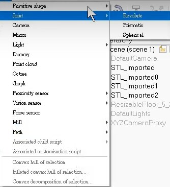
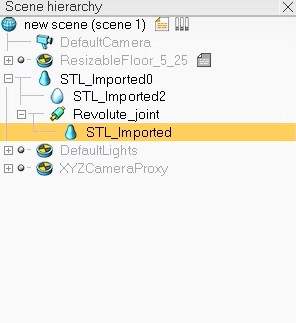
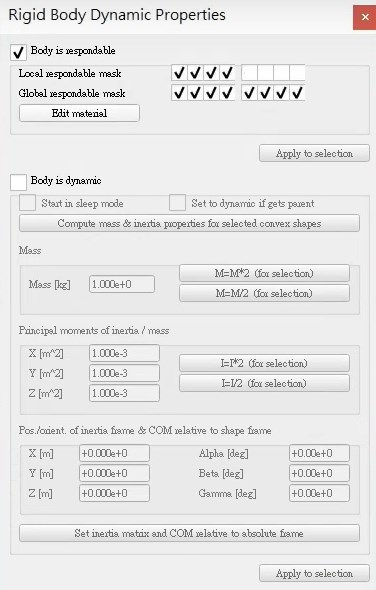
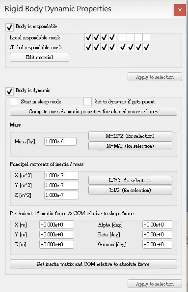
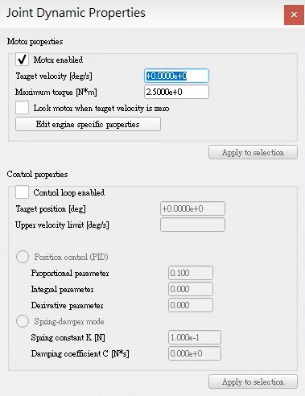
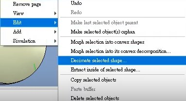
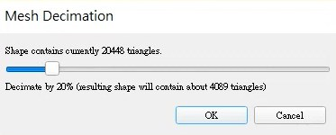

Onshape 協同操作 <<
Previous Next >> Github 倉儲管理
V-rep 模擬
完成送球機構V-rep模擬工作並學會如何簡化圖檔 (15%)
在完成繪圖的部分後，進行了自己的送球機構模擬。
部分講解:
1.開啟旋轉軸

2.將軸放在需要做旋轉的物件上並將分支樹裡相對應的物件放進軸裡。

3.將物件設定干涉(如不需模擬或例如不動的本體就不需打開Body is dynamic)

4.設定球與撥桿時需要進行物理的參數Body is dynamic就須開啟。

5.如發現撥桿的轉速太慢可修改轉速，而球的重量太重可以修改撥桿軸的扭力。

6.之後發現模擬呈現不順時，修改元件的簡化程度。

7.用來調整元件的簡化程度，越簡化越能提升電腦運算的效率，但簡化太多易造成模擬瑕疵

Onshape 協同操作 <<
Previous Next >> Github 倉儲管理